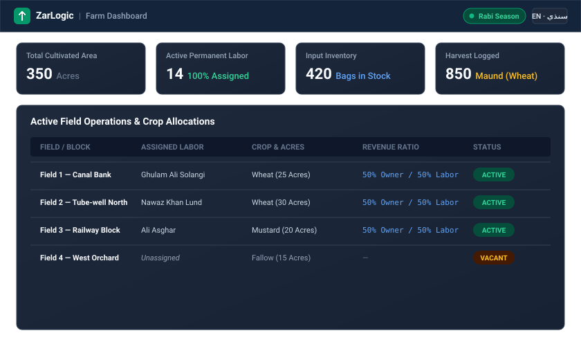
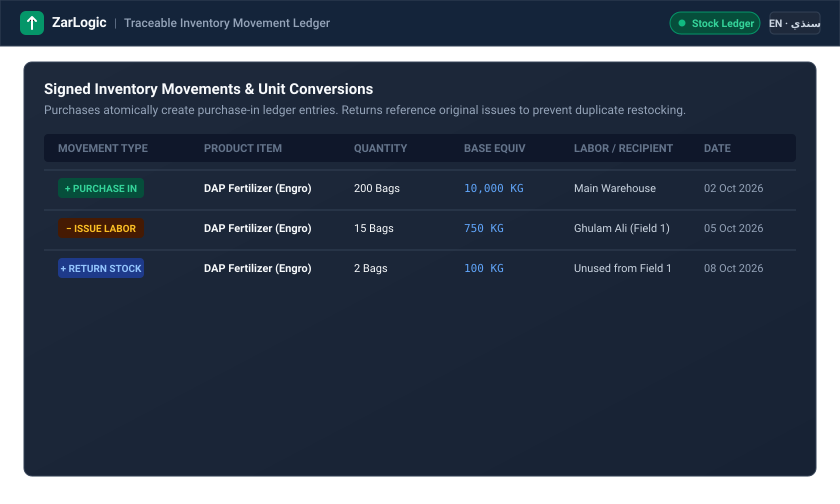
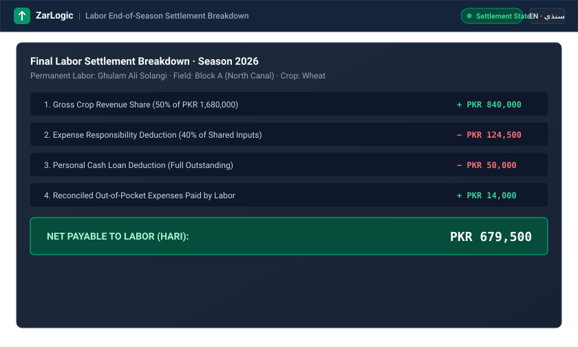

ZarLogic
Farming runs on complex labor shares, seasonal credit, input issues and verbal khata notebooks. ZarLogic brings order with a 28-table transactional ledger, clear expense ratios and transparent season settlements.

Overview
Farm operations rely on informal agreements and paper khatas. Acreage allocations, crop expense splits (like 60:40), warehouse issues, personal cash loans and harvest sales get mixed up by season end, leading to bitter disputes during labor settlement.
A 28-table normalized PostgreSQL ledger architecture. It records stable fields, effective-dated labor assignments, signed inventory movements, and reproducible season-closing settlements where every rupee, bag and maund is accounted for.
I conducted extensive domain research, authored SRS v1.3 and SDS v1.3, architected the 28-table data model with strict relational invariants, and designed the bilingual LTR/RTL workflows.
Before and after
What changed for each group of people who use it.
Farm Owner
Unclear real-time input costs, untracked cash loans, and manual settlement disputes after harvest.
A single dashboard showing active acreage, warehouse stock balances, sale receivables and auditable season profit/loss.
Permanent Labor (Hari)
Confusion over crop revenue entitlement, unverified deduction of loans, and mixed farm expenses.
Clear effective-dated field assignments and transparent itemized statements with exact revenue shares, expense responsibility and loan deductions.
Accounts & Sales Staff
Fertilizer and seed bags issued without receipts; multiple fields' harvests lumped together into informal sales.
Signed inventory movement ledgers, one-harvest-per-sale tracing, and linked receipts with zero balance drift.
What it does
Land & Field Allocation
Stable farm fields with fixed acreage, effective-dated labor assignments, and vacancy tracking without data duplication.
Crops & Seasons
Seasonal crop acreage distribution with immutable revenue percentage snapshots (e.g. 50% Owner / 50% Labor).
Inventory Movement Ledger
Signed movements (purchase, issue, consume, return) with product-specific unit conversions and stock balance views.
Expense Split Engine
Owner vs Labor responsibility percentages (e.g. 60:40) snapshotted per expense, recorded independently of the actual payer.
Harvest & Whole Sales
Harvest recorded in kg and maund (1 maund = 40 kg), linked whole-harvest sales, and multi-part payment receipts.
Labor Settlement & Close
Automated settlement line generation, full loan deductions, exit compensation, and versioned season closures.
How it works
From land assignment to season settlement
Balances are never typed manually — every rupee and bag is derived dynamically from atomic ledger entries.
How it was built
From research to database architecture
Screens





Key decisions
Ledgers that balance
Finished inventory movements, receipts and settlements are never changed. A mistake is fixed with a compensating reversal entry.
Payer never hides responsibility
Who bears an expense is kept apart from who paid the cash, so shared inputs never cause silent dispute.
Live views over stored totals
Stock balances, field vacancy and receivables are calculated from authoritative entries, so numbers never drift.
Tech stack
Where it is now
Specifications, data dictionary and 28-table database architecture completed and approved.
Deploying physical PostgreSQL DDL with RLS policies, transactional routines and the bilingual Next.js interface.
Zero balance drift between warehouse and ledger, 100% automated settlement reconciliation, and error-free English and Sindhi operations.
© 2026 Fakhurddin J. · All rights reserved.Designed & built by me